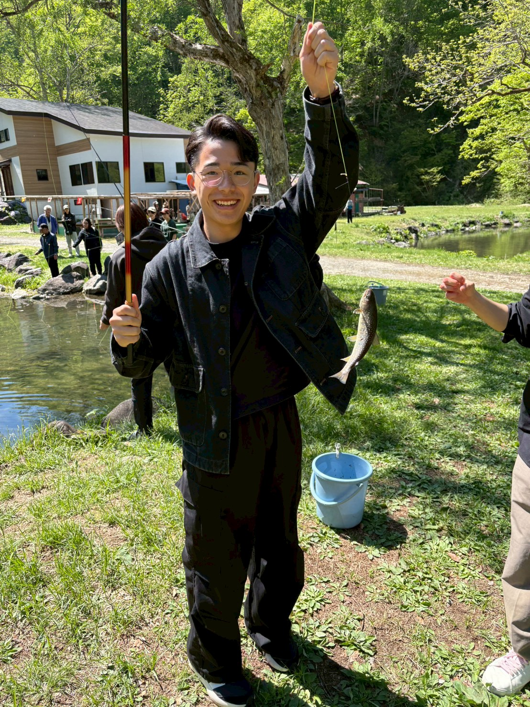
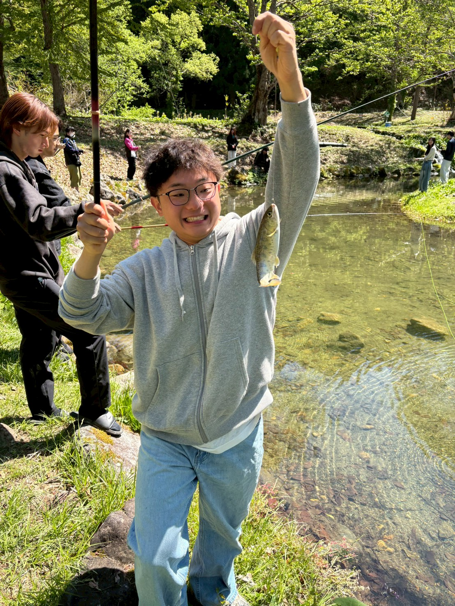

📰 Media Coverage
2026 — Fukushima Minpo

取材の様子 — 只見町
福島民報の記者が只見町の活動現場を訪れ、えんびゃれのメンバーと地域住民が一緒に汗をかく姿を取材してくださいました。
学生が地域と本気で向き合う姿が、メディアを通じて福島県全体へ広がっています。
都会の学生が只見に通い続け、住民と共に地域の課題へ向き合う——
その熱量が、このまちに新しい風を吹き込んでいる。
— 福島民報 取材記事より

只見町での活動 — えんびゃれ
農業体験・地域討論・伝統文化の継承など、えんびゃれの活動は多岐にわたります。取材では、学生と地域住民が笑顔で語り合う現場が記録されました。
「来てよかった」ではなく、「また来たい」「ここを変えたい」と思える場所をつくることが、えんびゃれの目標です。
福島民報
福島県を代表する地方紙。えんびゃれの活動と、只見町での学生・住民の交流が紙面で紹介されました。